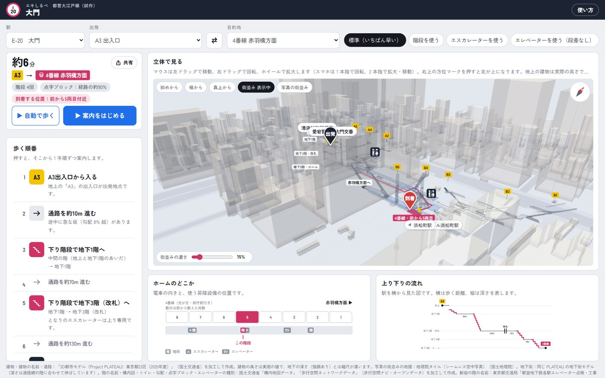
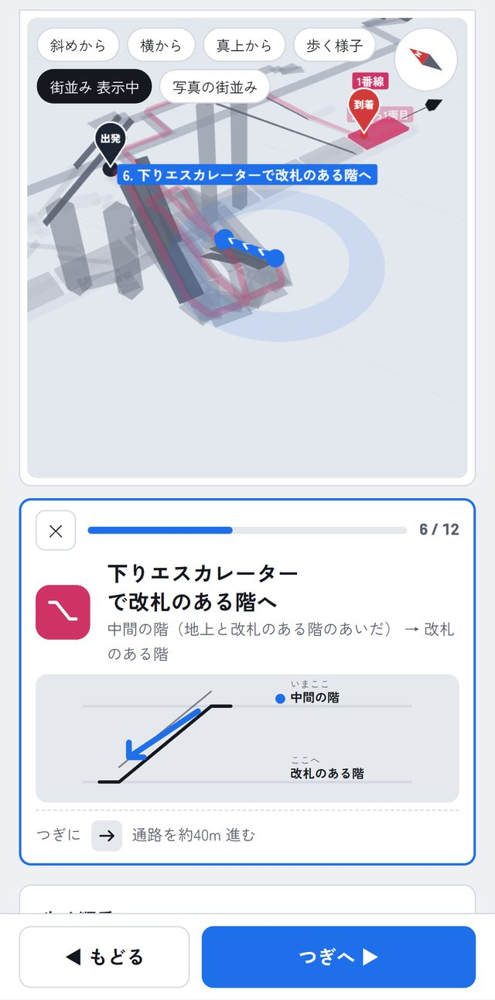
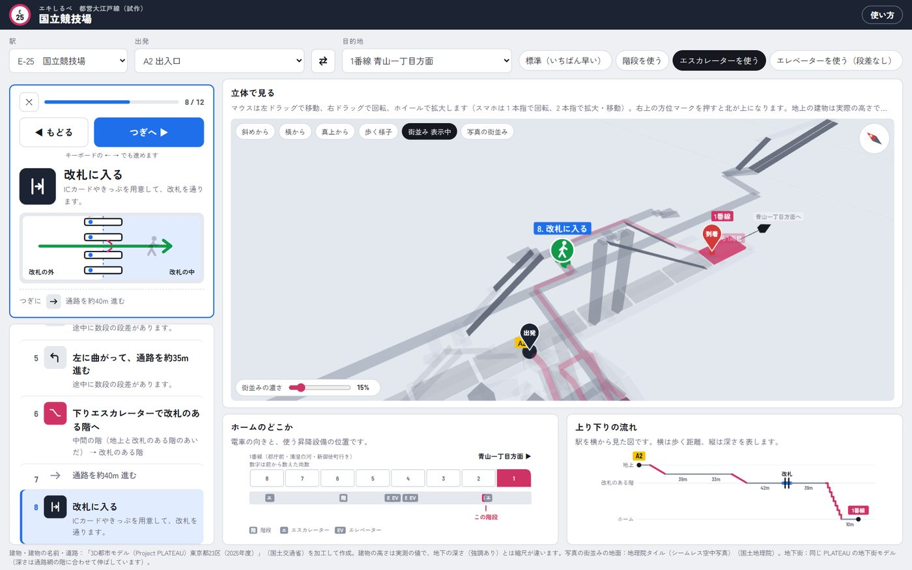
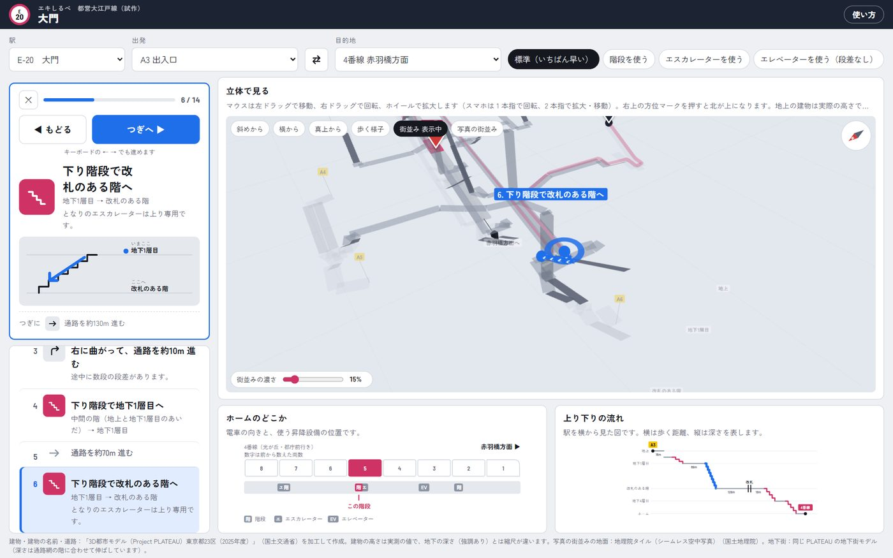
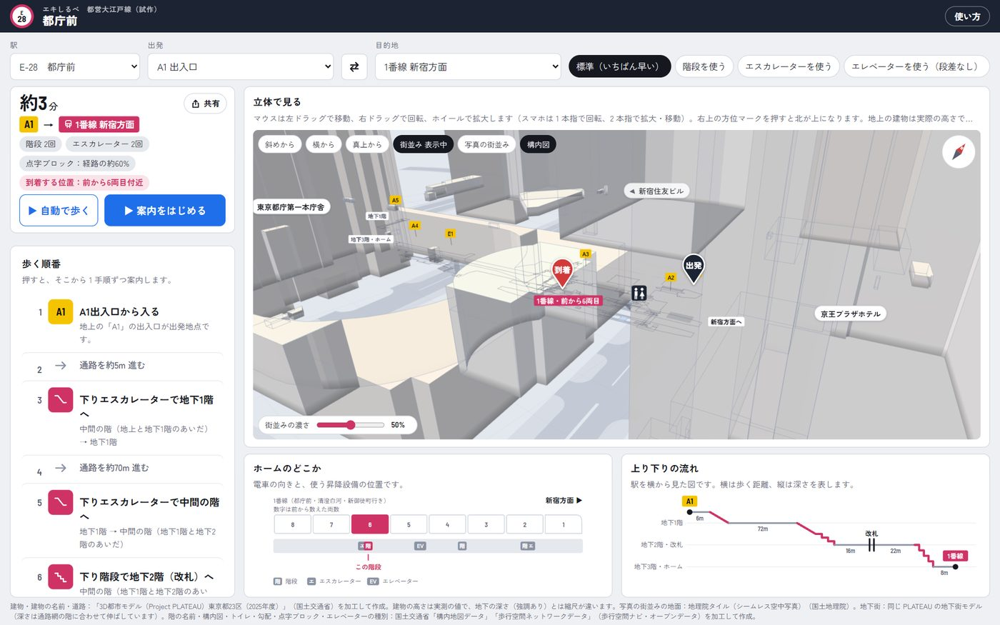
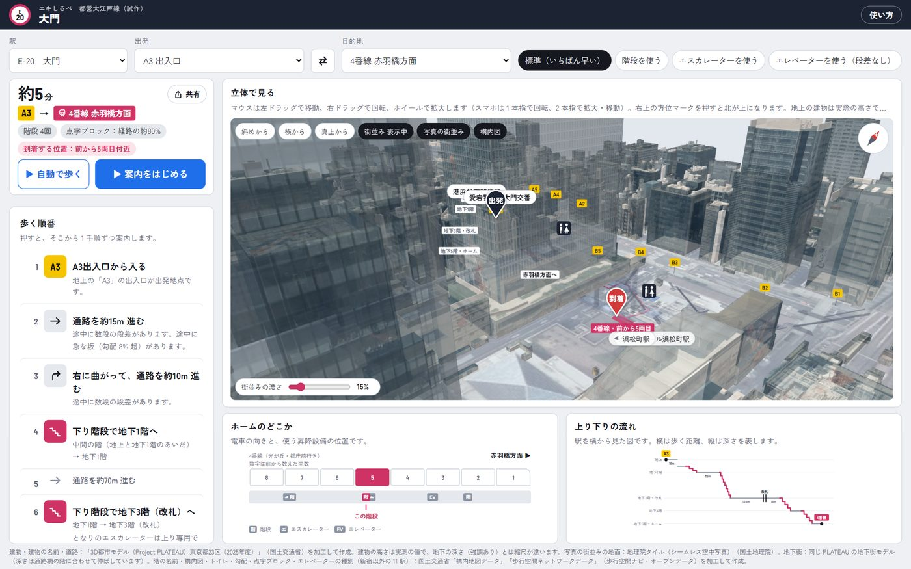
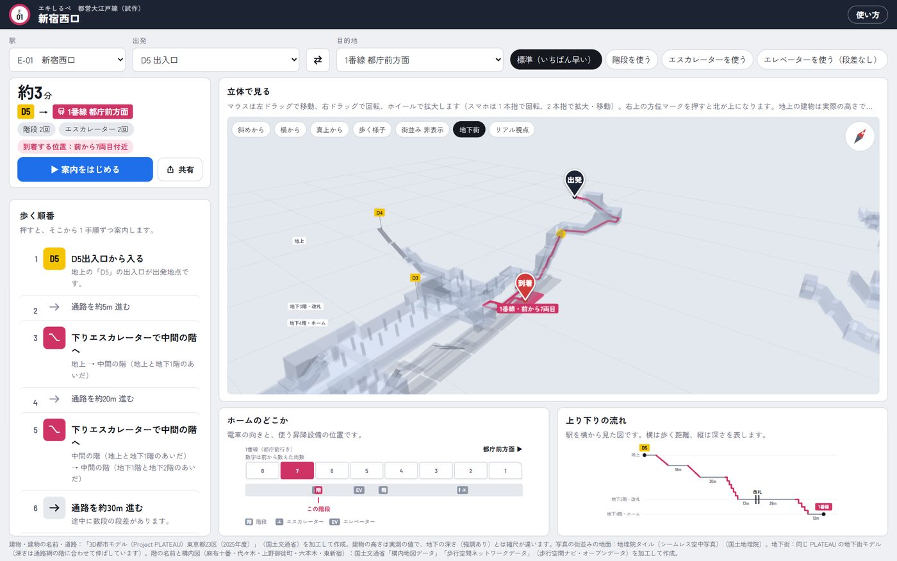
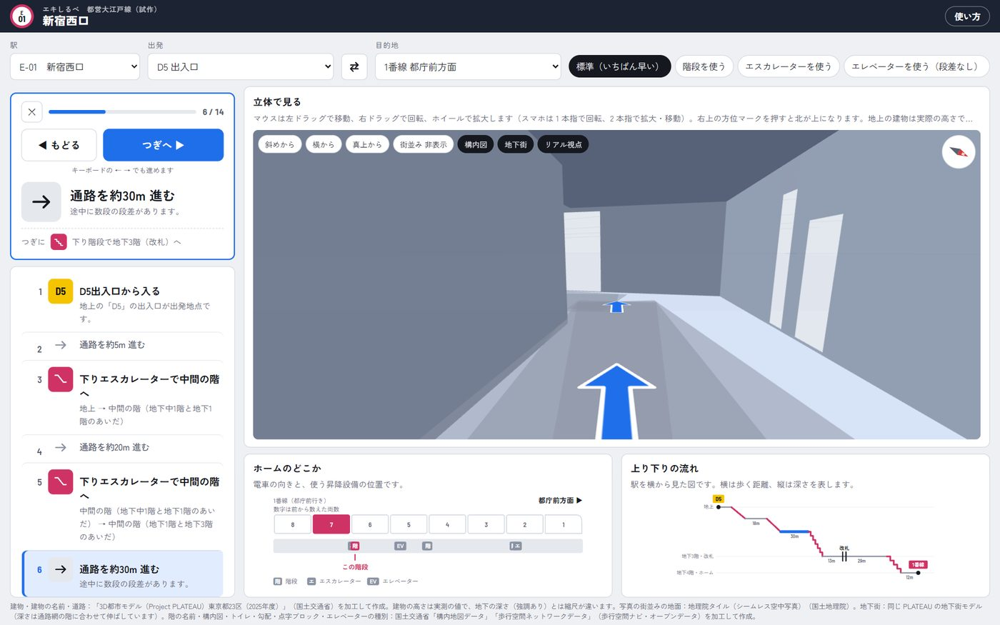
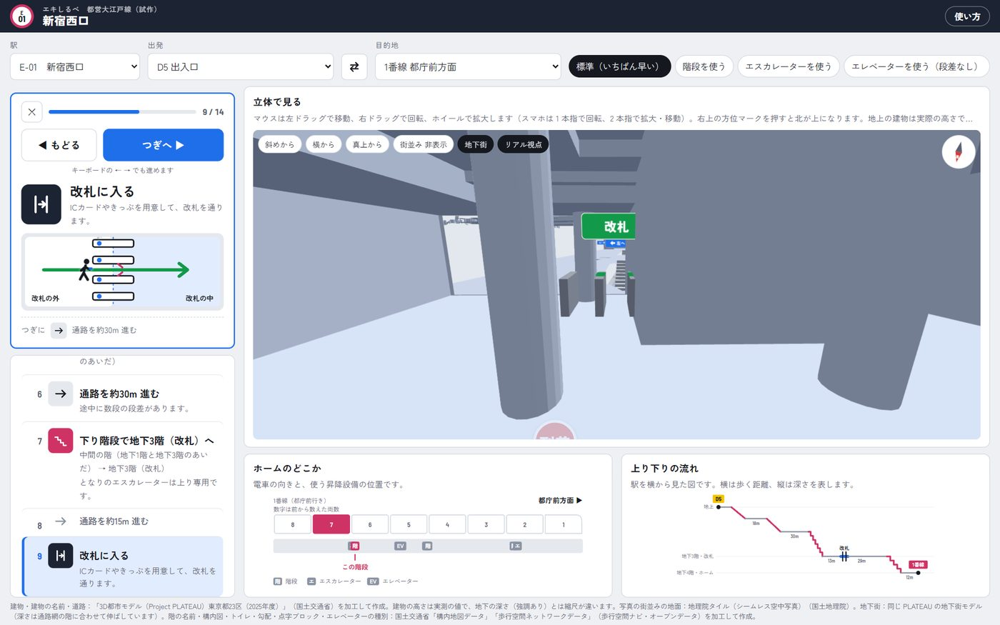
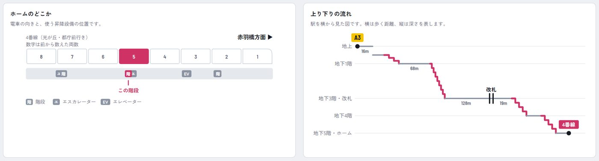

エキしるべとは
駅の出入口からホームまで（ホームから出入口まで）の歩き方を、立体図と1 手順ずつの案内で示します。深い地下駅で「どの階段を下りるのか」「いま何階にいるのか」が分かるように作りました。スマートフォンでもパソコンでも、ブラウザだけで使えます。
対応駅（都営大江戸線 12 駅）: 新宿西口・東新宿・上野御徒町・大門・赤羽橋・麻布十番・六本木・青山一丁目・国立競技場・代々木・新宿・都庁前
パソコンでは、ページをスクロールせずに 1 画面に収まります。左に要約・案内カード・歩く順番（歩く順番は枠の中でスクロール）、右に大きな立体図、その下にホームのどこかと上り下りの流れが並びます。スマートフォンでは縦に並びます。

1駅・出発・目的地・移動の条件を選ぶ
- 駅を選びます。
- 出発と目的地を、出入口（A3 など）かホーム（4番線 赤羽橋方面 など）から選びます。⇄ で入れ替えられます。
- 移動の条件を選びます。
| 標準 | いちばん早い経路。階段と並んでいるエスカレーターがあれば、エスカレーターを選びます。 |
|---|---|
| 階段を使う | 階段を優先。階段が無い所はエスカレーター、それも無ければエレベーター。 |
| エスカレーターを使う | エスカレーターを優先。エスカレーターが無い所（たとえばホームへ下りる向きが無い）は階段、それも無ければエレベーター。 |
| エレベーターを使う | 段差なし。階段・エスカレーターを使いません。行けない出入口のときは、行ける出入口を近い順に出します。 |
選んだ駅・出発・目的地・条件はこの端末に覚え、次に開いたときはそこから始まります。
「共有」ボタンで、いまの案内のリンクを送れます（スマートフォンは端末の共有画面、パソコンはリンクをコピー）。リンクを開くと、同じ駅・出発・目的地・条件の案内が出るので、待ち合わせ相手に「このとおり来てね」と送れます。アドレス欄の URL も選んだ内容に合わせて変わります。
上の欄には、かかる時間のめやすと、階段・エスカレーター・エレベーターの回数、ホームの前から何両目に着くか（降りるか）が出ます。
21 手順ずつ案内する
「▶ 案内をはじめる」か、左の「歩く順番」の手順を押すと、案内カードが出ます。
- ◀ もどる／つぎへ ▶ で 1 手順ずつ進みます（パソコンは ← → キーでも）。屋内では現在地が取れないので、歩いたら「つぎへ」を押してください。
- 途中でやめるときは、案内の左上の ✕ 案内を終了（パソコンは Esc キーでも）。最後の手順では「つぎへ」が 到着・案内を終了 に変わり、押すと案内を終えます。途中でやめたときは、その手順から「続きから案内」で再開できます。
- 上り下りの手順には、いまこことここへの階、階段・エスカレーター・エレベーターの形と向きのイラストが出ます。
- 改札の手順では、改札機を緑の矢印に沿って人が通り抜けます。出入口からホームへは「改札に入る」、ホームから出入口へは「改札を出る」。
- 通路の途中で大きく向きを変えるところは、「右に曲がって、通路を約◯m 進む」「左に曲がって、…」「折り返して、…」と分けて出します。
- 階段の手順で、すぐ隣に逆向き専用のエスカレーターがあるときは「となりのエスカレーターは上り専用です。」のように添えます（使えないエスカレーターと見分けるため）。
- 案内中、立体図はいまの手順の矢印を後ろ・左・上から見る位置へなめらかに移ります。曲がるときは、歩く人が曲がった向き（右に曲がれば時計回り）に回り込みます。パソコンでは案内中は上の要約を隠し、歩く順番を広く見せます。


3立体で見る
駅の通路網を階ごとに重ねた立体図です。マウスは左ドラッグで移動、右ドラッグで回転、ホイールで拡大します。スマホは 1 本指で回転、2 本指で拡大・移動します。
- いまの区間は、青い細い円柱の矢印で、白い「＞」の模様が進む向きに流れます。玉が始まり、矢じりが終わりです。いま歩いている階は濃く、ほかの階は薄くなります。
- 階段・エスカレーター・エレベーターの入口に波紋が出ます。
- 右上の方位マークは視点と一緒に回ります。押すと北が上になります。
- 上のボタンで斜めから／横から／真上からに切り替えられます。進め方は左の 2 つのボタンです。「▶ 案内をはじめる」は 1 手順ずつ「つぎへ」で進める手動の案内、「▶ 自動で歩く」は経路全体を自動で後ろから追いかけます。自動で歩いているあいだはボタンが「■ 止める」に変わり、押すとその場で止まります（立体図をドラッグしても止まります）。止めずに終えるときは、ボタンの上の「✕ 案内を終了」（パソコンは Esc キーでも）。経路全体の見え方（リアル視点なら出発地点）に戻り、次は最初からになります。止めた所や、手動の案内を閉じた手順は覚えていて、ボタンが「▶ 続きから歩く」「▶ 続きから案内」に変わり、「手順 6『…』から再開します」と出ます。最初からにしたいときは「最初からにする」を押します（歩き終えたときと、経路を選び直したときも最初からに戻ります）。
- 階段・エスカレーターは、画面上で急すぎるとき（35 度より急）は 35 度で描きます。元データでは長い階段が短く記録されていることがあるためで、その分、手前の通路の線は短くなります。
- 高さは見やすいように強調しています。データには実際の深さが無いので、階の順番を見やすく並べたものです。出発は紺の「出発」、目的地は赤の「到着」のピンで示します。

街並みと目印の建物
地上には、国土交通省の 3D 都市モデル PLATEAU から、建物を実際の高さで、道路を車道・歩道に分けて描きます。建物は暖かい白の壁と色味を変えた屋根に、斜め上からの日差しと根元の陰を付け、形が分かるようにしています（地下の通路網が透けるよう半透明）。名前のある代表的な建物（東京都庁第一本庁舎など）は目印として名前を出し、画面の外にある建物は端に向きの矢印つきで出します。「街並み」ボタンで表示・非表示、左下の「街並みの濃さ」で濃さを変えられます。案内中は経路が見やすいように建物を消します。

写真の街並み
「写真の街並み」ボタン（街並みを表示しているときに出ます）を押すと、建物を PLATEAU の外壁・屋根の写真付きの建物に、地面を国土地理院の航空写真に切り替えます。道路・横断歩道・線路・川は航空写真に写ります。押した状態はこの端末に覚えます。

- 選んだときに、その駅のまわりのデータを PLATEAU と国土地理院の配信元から読み込みます。駅によって約 3.5〜34 MB あるので、スマートフォンでは通信量にご注意ください（右下に読み込みの進み具合が出ます）。
- PLATEAU に外壁・屋根の写真が無い建物は、明るい灰色で描きます。駅によっては半分近くの建物が写真なしです（例: 麻布十番の周りは約 46%）。
- 「街並みの濃さ」は 0% で消え、15%（最初の値）で半透明、100% で不透明になります。
- 案内中は、写真の建物も航空写真も消します。
構内図
大江戸線の 12 駅で、国土交通省の構内地図データから、通路・コンコース・階段・エスカレーター・エレベーター・スロープ・トイレの床の形を、階ごとにその高さへ薄く描きます。改札の内側の通路は青みを付けています。業務用の部屋など一般の人が入れない所は描きません。構内図を表示しているときは、構内図の床の上にある平らな通路は灰色の線を描かず、床の形で見せます（階段・エスカレーター・エレベーターの線と、構内図に床の無い所の通路は線のまま）。階段・エスカレーターは、構内図の範囲の長さで描きます。手順を選ぶと、ほかの階の床は薄くなります。構内図はいつも表示しています（「地下街」を表示しているときは、地下街のモデルと重なる所の構内図と、通路網の階段・エスカレーター・エレベーターの線は描きません）。
トイレ・坂・点字ブロック・エレベーター
- 立体図にトイレのマーク（男女の絵）を、その階の床に立てます。経路の通路のそば（10 m 以内）に、いま歩いている側（改札の内か外か）と同じトイレがあれば、手順に「そばにトイレがあります（改札内）」、要約に「トイレ：経路のそば」と出します。
- 国土交通省の歩行空間ネットワークデータを通路ごとに対応させ、勾配 8% を超える急な坂があれば手順に添えます。「エレベーターを使う（段差なし）」では、急な坂をなるべく避けます。
- 要約に、経路の通路のうち点字ブロック（視覚障害者誘導用ブロック）のある長さの割合を出します。
- エレベーターは、車椅子・視覚障害者に対応しているかを手順に添えます。
地下街
新宿西口と上野御徒町では、「地下街」ボタンで、PLATEAU の地下街モデルを水色の半透明で重ねられます。新宿西口は壁・床・天井のある詳しいモデル（LOD4）、上野御徒町は箱の形の簡単なモデル（LOD1）です。案内中も地下の空間の手がかりとして薄く残します。

- 通路網の深さは階の順番を見やすく並べたもので実際の深さではないので、通路網の階ごとに、その階の通路が乗っている地下街の床の深さを調べて合わせ、深さを区間ごとに伸ばしています。地下街のデータにはホームと、ホームへ下りる階段は入っていません。新宿西口は、点の位置・階・高さを補正したデータを使っているので、通路網を実際の深さで描き、地下街とそろいます。
- 新宿西口は約 19 MB を読み込みます。押した状態はこの端末に覚えます。
リアル視点（新宿西口）
新宿西口では「リアル視点」ボタンで、地下街の中を人の目の高さで歩いて見られます。リアル視点は見え方の切り替えで、押すと出発地点に立って前を見ます。「案内をはじめる」で進めるとその手順の区間を、「自動で歩く」では経路全体を、目の高さで歩きます。地下街は透明にせず、ふつうの壁・床・天井として描きます。


- 平らな通路の床に約 4 m おきに青い「↑」、曲がり角では進む先の壁に「← 左へ」「右へ →」、階段・エスカレーターの入口に「↓ 階段」などの案内板を出します。改札では、通路を横切る改札機の列（通れる所の上に緑の明かり）と、緑の「改札」の案内板を出します。トイレは、壁の向こうでも見える「トイレ」の案内板を天井近くに出します（40 m 以内）。地下街のモデルに無い階段・エスカレーター（ホームへ下りる階段など）は、段と、経路が通るものは両側の壁で描きます。
- 地下街のデータにはホームと、ホームへ下りる階段が無いので、改札の先は壁の無い所を歩きます。元データの通路の位置と地下街のモデルが数 m ずれている所では、壁の外に出ることがあります。
- 「斜めから」などの視点のボタンを押すと、外からの見え方に戻ります。
4ホームのどこか・上り下りの流れ
- ホームのどこか: 8 両の電車と進行方向、ホームにある階段・エスカレーター・エレベーターの位置、使う設備を示します。数字は進行方向の前から数えた両数です。
- 上り下りの流れ: 駅を横から見た図です。横は歩く距離、縦は深さ。どこで何階分上り下りするかが一目で分かります。

データと、その限界
- 「前から何両目」は、ホームの乗車位置の並びと次の停車駅の方向から推定した値で、号車番号とは別です。
- 階は「地下7階（ホーム）へ」「地下1階（改札）へ」のように、階の名前で案内します。国土交通省の構内地図データにある実際の階の名前（地下中1階を含む）です。データ上の階層の番号がそのまま地下N階になっていることを確かめています。新宿は、東京都交通局の「都営地下鉄各駅エレベーター」データの停止階に合わせて、改札を地下3階、新宿線への連絡の階を地下4階、ホームを地下7階と呼びます（ほかの 8 駅も、このデータで改札・ホームの階が合っていることを確かめました）。新宿駅は、駅のまわり全体での階の数え方（国土交通省のデータ・東京都都市整備局の新宿駅周辺のデータでは改札が B1F）もあり、案内図によって階の数字が違います。
- 踊り場など名前の無い階は「中間の階」とし、説明の行にどの階のあいだかを添えます。
- 建物の高さは実測の値ですが、地下の深さは見やすく強調しているので、縮尺が違います。
使っているデータ
| 駅の中の通路網 | 東京都交通局・公共交通オープンデータセンター「鉄道関連情報（GTFS-Pathways）」2026年9月24日版（CC BY 4.0）。点 2,561・通路 2,863（階段 423・エスカレーター 187・エレベーター 129・改札 21）、出入口 60、ホーム 26 |
|---|---|
| 建物・建物の名前・道路 | 「3D都市モデル（Project PLATEAU）東京都23区（2025年度）」（国土交通省）を加工して作成。建物 3,656 棟、名前のある建物 31 棟、道路の面 3,589 |
| 階の名前・構内図・トイレ・坂・点字ブロック | 国土交通省「構内地図データ」（階層別屋内地理空間情報データ仕様書に準拠）の階（Floor）の名前と物理的な空間（Space: 通路・階段・エスカレーターなどの床の形）、「歩行空間ネットワークデータ」（歩行空間ネットワークデータ整備仕様に準拠）の点の階。都営大江戸線の 12 駅（新宿は、階の付け方が GTFS-Pathways と合わない区域があるので、床の形ごと・通路ごとに GTFS-Pathways の階へ置き直して使っています）。歩行空間ナビ・オープンデータ（https://ckan.hokonavi.go.jp/）。公共交通オープンデータチャレンジ2026 の期間中の限定公開。歩行空間ネットワークの点の階が GTFS-Pathways の階（level_index）と同じ数で付いていること（新宿以外の 11 駅は近くの点で 9 割以上一致）を確かめて対応させています |
| 新宿西口の通路網の補正 | 上の GTFS-Pathways を、PLATEAU の地下街モデル（新宿区 LOD4）と国土地理院の標高 API を参照して、点の位置（71 点、最大 5.5 m）・階（18 点）・高さ（全点）を手で補正したもの。GTFS-Pathways × PLATEAU 統合エディタで作成。元データに無い高さが入るので、新宿西口だけは通路網を実際の深さで描きます |
| 地下街 | 同じ PLATEAU の地下街モデル（新宿区 LOD4、台東区 LOD1、3D Tiles）。地表の高さは国土地理院の標高 API とジオイド高 API から |
| 写真の街並み | 建物: 同じ PLATEAU の建築物モデル LOD2（写真付き、3D Tiles）。地面: 地理院タイル（シームレス空中写真）（国土地理院） |